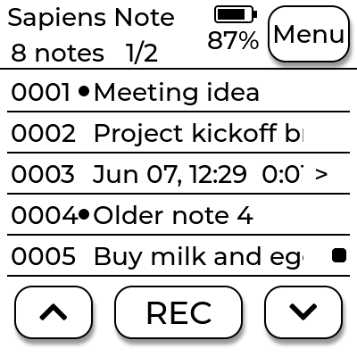
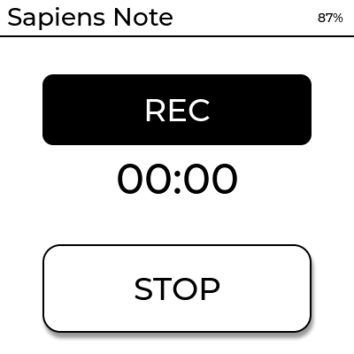

🎙️
Captura em um toque
Grava áudio 16 kHz mono, salvo localmente primeiro. A rede nunca é necessária para gravar.
Um gravador de notas de voz com IA numa tela e-ink de 1,54". Aperte um botão, fale, guarde no bolso. Depois a nota volta transcrita — sem nunca abrir o celular.

Sem feed, sem notificações, sem distração. Tela e-ink de alto contraste, dias de bateria e uma interface de segundos.



Grava áudio 16 kHz mono, salvo localmente primeiro. A rede nunca é necessária para gravar.
Tela de 200×200 que segura a imagem com zero energia. Pensada para uso em segundos.
Texto completo preenche a tela em rolagem infinita; toque para pausar e continuar.
whisper.cpp local (offline) ou a API da OpenAI — você escolhe. Troque o motor sem mexer no app.
Todos os dados ficam locais. Sem contas, sem multi-tenant, sem lock-in na nuvem.
Toque, baixe o .wav, transcreva/re-transcreva e veja o espectro de áudio — tudo na sua máquina.
Organize por tags e reproduza com play/pause/stop e barra de progresso embutidos.
Núcleo C++ compartilhado, dois simuladores desktop e firmware ESP-IDF. Sem caixa-preta.
Aperte o botão e fale. O áudio vai para o cartão como WAV 16 kHz. Funciona sem nenhuma rede.
No dashboard local, transcreva com whisper.cpp (offline) ou OpenAI. O texto volta pelo núcleo.
A nota aparece transcrita no dispositivo, com rolagem automática — sem abrir o celular.
Um app web local (um único binário C++) que lê o mesmo banco do dispositivo. Toque, baixe, transcreva e veja o espectro — sem nuvem obrigatória.
A maioria dos gravadores com IA é fechada, exige nuvem e cobra assinatura. O Sapiens Note inverte isso: local, aberto e seu.
| Característica | Sapiens Note | Plaud Note | Limitless Pendant | Otter.ai | Rabbit R1 |
|---|---|---|---|---|---|
| Captura 100% offline | ✓ | ✓ | ✓ | ✕ | ~ |
| Transcrição local (sem nuvem) | ✓ | ✕ | ✕ | ✕ | ✕ |
| Dados ficam no seu hardware | ✓ | ✕ | ✕ | ✕ | ✕ |
| Sem assinatura para o essencial | ✓ | ✕ | ✕ | ✕ | ~ |
| Tela e-ink para leitura | ✓ | ✕ | ✕ | ✕ | ✕ |
| Lê a transcrição no aparelho | ✓ | ✕ | ✕ | ✕ | ~ |
| Motor de IA plugável | ✓ | ✕ | ✕ | ✕ | ✕ |
| Open source / hackeável | ✓ | ✕ | ✕ | ✕ | ✕ |
Comparação baseada em informações públicas dos produtos (2026); ofertas dos concorrentes podem mudar. “~” = parcial/depende da configuração.
O coração do produto é a placa ESP32-S3-ePaper-1.54 — sem a case original do Pala Note. Tudo o que importa, em ~40 mm.
Render da sua case impressa em 3D, montada com o hardware dentro. Veja girando na seção Live 3D.
Arraste para girar. Role para dar zoom. Só o hardware — sem a case.
Baseado na placa Waveshare ESP32-S3 1,54" e-Paper (variante touch).
Não para gravar. A captura é 100% offline; só a transcrição pode usar rede — e mesmo ela roda offline com whisper.cpp.
Não por padrão. Tudo fica local (SQLite + WAV). Só sai da sua máquina se você escolher o motor OpenAI.
Não. O essencial é gratuito e open-source. Você só paga (à OpenAI) se optar por esse motor de transcrição.
Sim. Há dois simuladores desktop (SDL2 e LVGL 9) que rodam a mesma UI e lógica do dispositivo, mais o dashboard web.
A placa Waveshare ESP32-S3 1,54" e-Paper (variante touch): tela mono 200×200, codec de áudio ES8311, microSD e bateria.
Depende do modelo whisper escolhido — os modelos multilíngues cobrem dezenas de idiomas, incluindo português e inglês, com detecção automática.
Sim. Núcleo C++, simuladores e firmware ESP-IDF estão no GitHub. Você pode ler, modificar e construir o seu.
Explore o código, rode os simuladores no desktop e construa o seu Sapiens Note.